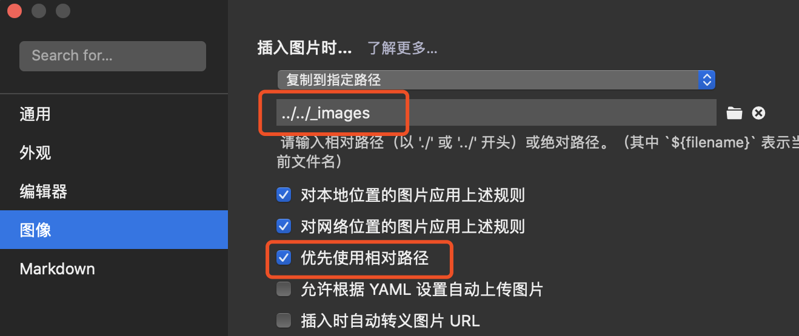
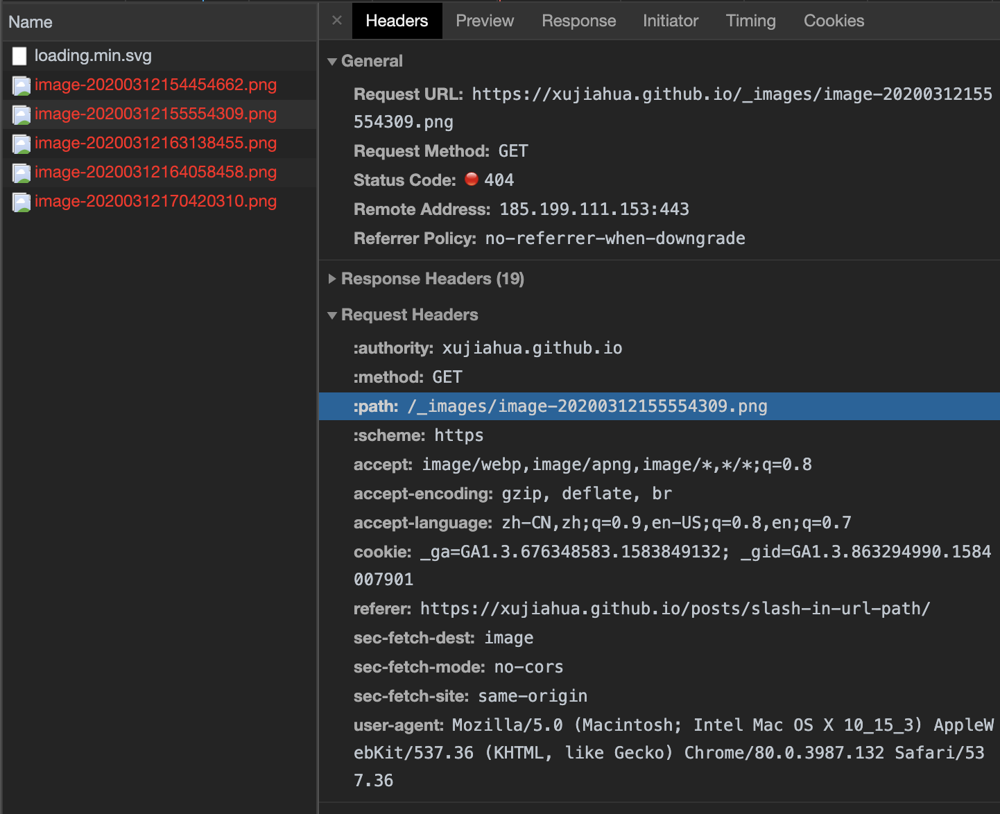

Github pages重新开始：使用Hugo、Typora
重新开始GitHub pages
曾使用GitHub pages + jekyll 写过一段时间博客，没啥营养。
打算重新开始：
- 把我记录在Evernote和Typora中的资料迁移到
GitHub pages上。 - 另外做一些Web形式的小工具，挂载在一个子目录里，方便平时使用。
Hugo + Typora
打算如下：
- Markdown文件还是使用Typora写。用过MWeb、Typora，Typora使用感受更好些（这么好用还不要钱）。
- Hugo作为静态网站生成，创建一个博客模板。
Hugo quickstart
# 安装hugo（其实是Go编译的二进制文件）
brew install hugo
# 创建site
hugo new site quickstart
# 通过git submodule的方式下载主题
git init
git submodule -b master add https://github.com/dillonzq/LoveIt themes/LoveIt
# 更新config.toml，配置主题参数，见loveit配置
# 创建博客，创建的posts在content目录下。文件格式为：content/<CATEGORY>/<FILE>.<FORMAT>
# hugo new 会采用 archetypes/default.md作为模板，把一些共性配置放在这个模板里吧。
hugo new posts/my-first-post.md
# 本地看blog效果，-D表示草稿状态的博客也显示
hugo server -D
# 生成静态网站到./public/，也可以指定目录
hugo -D
挑选了一个比较实用的主题 https://hugoloveit.com/
- 比较基本的posts, tags, categories
- 文章页面右边可显示文章的目录表
参考：
图片文件夹的配置
Typora的贴图功能很方便：配置好图片文件夹，从剪贴板粘贴图像会自动将图片保存到图片文件夹，并自动命名。
hugo管理静态资源的方式跟Typora默认是不适配的，需要做些调整。
长话短说
hugo项目中，创建static/images文件夹，并且软链接到项目根目录下：
mkdir -p static/images && ln -s `pwd`/static/images images
- Typora打开content目录，并做配置如下。之后，像平常那样用Typora写文字吧。

在根目录建images软链接的理由
一些信息和思路：
hugo的静态资源放在static目录下。hugo生成静态文件，static目录会将其下的文件、文件夹平移到目标网站目录的根目录，比如static/images/1.png，平移后为images/1.png。html里使用/images/*的方式引用。（可查看public文件夹的目录结构）- hugo static目录下的资源目录不能是软链接，WTF。Unsupported symlink found https://github.com/gohugoio/hugo/issues/6225
- 万幸Typora可以用软链接。
- 一篇post，在浏览器和文件系统上的目录结构是不同的。以最末层的文件夹为
./。浏览器下目录结构如下：
/ => ../.. 举例来说，以图片文件夹名称为`image`为例，`../../images/*` = `/images/*`
/posts/ => ../
/posts/post_name/ => ./
- 文件系统下的目录结构：
hugo-blogger => ../../
content => ../
posts => ./
post_name
- 所以为了能让文件系统和浏览器上都显示图像，
images软链接放在项目根目录下比较合适。
GitHub pages
静态文件输出到xujiahua.github.io上去。
git submodule add -b master https://github.com/XUJiahua/XUJiahua.github.io.git public
复用这里的deploy脚本。https://gohugo.io/hosting-and-deployment/hosting-on-github/#put-it-into-a-script
图片资源404的问题
_images文件夹下的资源404了。太奇怪了，路径OK，也没大小问题。过了很久还是不见效。

尝试在images文件夹下放了个1.txt，理论上链接应该是 https://xujiahua.github.io/images/1.txt，一开始也是404。过了半小时OK了。
结论是，_images文件夹取名可能有问题。那就改用images。
参考：
Last modified on 2020-03-10